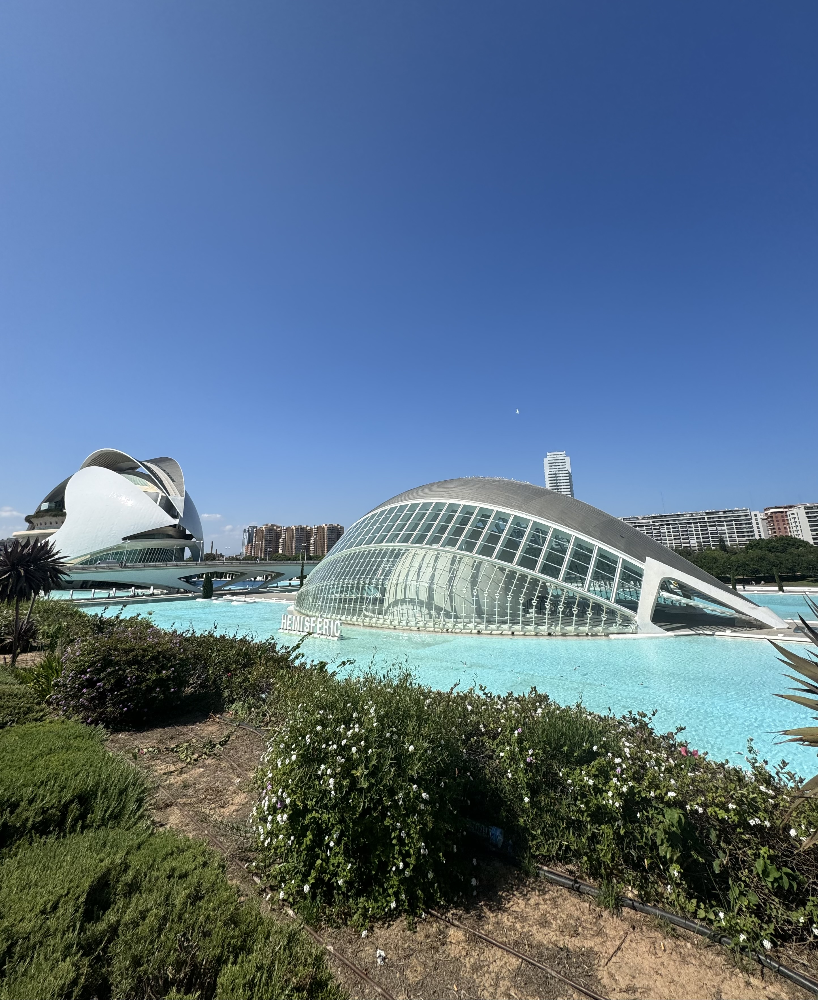
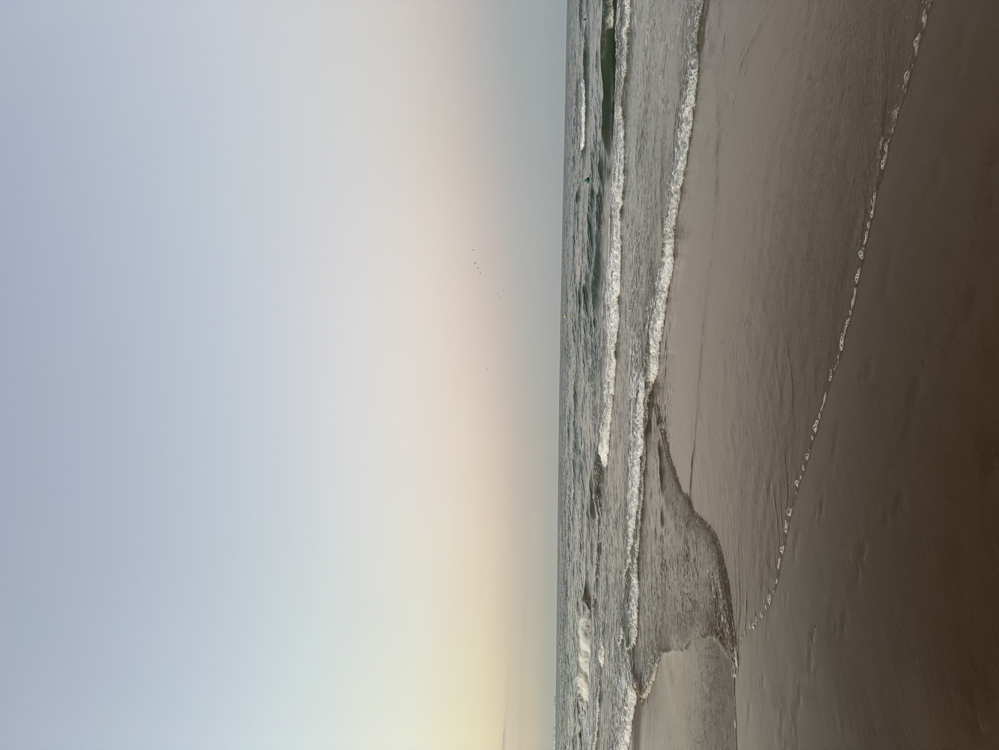

Walencja – Miasto Sztuki i Nauki
Walencja to trzecie co do wielkości miasto Hiszpanii, które idealnie łączy historyczny urok z futurystyczną nowoczesnością i śródziemnomorskim luzem.
- Miasto Sztuki i Nauki: Futurystyczny kompleks zaprojektowany przez Santiago Calatravę, w którym znajdziesz gigantyczne oceanarium i interaktywne muzeum nauki.
- Ogrody Turii: Zielone „płuca” miasta – 9-kilometrowy park stworzony w dawnym korycie rzeki, idealny na spacery i rower.
- Kolebka Paelli: To tutaj zjesz najbardziej autentyczną paellę na świecie, a w marcu przeżyjesz niesamowity festiwal Las Fallas.
- Historyczne Centrum: Wąskie uliczki starego miasta kryją m.in. gotycką Giełdę Jedwabiu wpisaną na listę UNESCO.
- Szerokie plaże: Plaże takie jak Malvarrosa czy Patacona pozwalają odpocząć nad morzem zaledwie kilka minut od centrum miasta.
Nowoczesne miasto nauki
Najbardziej znanym miejscem jest tutaj wielki kompleks nowoczesnych budynków, który wygląda jak z przyszłości.
Znajduje się tam ogromne oceanarium z rybami oraz muzeum nauki. Warto to zobaczyć na własne oczy.

Co warto zjeść w Walencji?
Walencja to raj dla smakoszy. Nie możesz opuścić miasta, nie próbując słynnej paelli valenciana, która wywodzi się właśnie stąd. To danie oparte na ryżu, kurczaku, króliku i fasoli, gotowane tradycyjnie na ogniu z drewna pomarańczowego.
Na szybką przekąskę polecam esgarraet, czyli sałatkę z pieczonej czerwonej papryki i solonego dorsza z oliwą. A na deser? Koniecznie zamów fartons – słodkie, miękkie wypieki idealnie pasujące do wspomnianej już horchaty.

Szeroka i spokojna Plaża de la Patacona
Jeśli szukasz idealnego miejsca na relaks i ucieczkę od miejskiego zgiełku Walencji, Playa de la Patacona to absolutny strzał w dziesiątkę. Stanowi ona naturalne, północne przedłużenie niezwykle popularnej, ale często zatłoczonej plaży miejskiej Malvarrosa.
Patacona słynie z neonowych przestrzeni, bardzo drobnego, miękkiego i jasnego piasku oraz wyjątkowo czystej, spokojnej wody Morza Śródziemnego.
